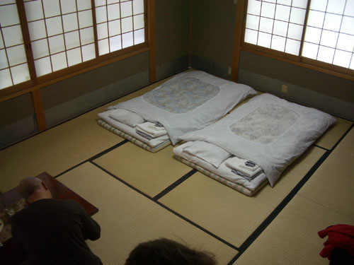
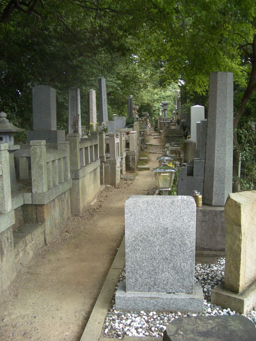
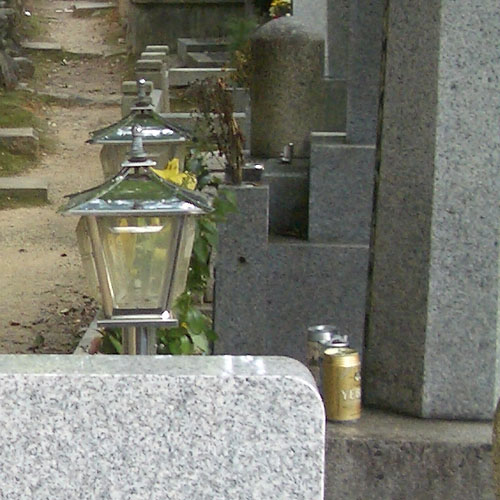

| < | > |
| To Kyoto | [2004-10-06 22:41] |
| So now it was time to leave the safely of Yukiko's flat and throw ourselves out into the untamed world. In order to have somewhere to land by nightfall, I'd booked a ryokan by email before leaving London. A Kyoto expert had told us that the place we had booked was miles out - the Kyoto equivalent of Tunbridge Wells - and despite the alarmist exaggeration, he was right. But I reckoned it didn't matter, we would be just a casual walk from the Ryoanji and Kinkakuji temples, which I had already planned to visit the next day. Neither of us had ever stayed in a ryokan before, and didn't quite know what to expect. One of the reasons I had chosen the Yamazaki (as it was called) was because we could have our own bathroom. In a typical ryokan experience (or so I imagined) you go down the hall to piss at 3 in the morning, hoping not to meet any equally embarrassed caucasians along the way. I don't remember much about the train journey to Kyoto. The weather was damp and dull again. The view was nonstop buildings that congealed into named places at railway stations. In Kyoto by early afternoon, it was warming up, there was an element of style in the air. We had arrived in a city. With a bit of detective work we found the bus and began the journey to Tunbridge Wells.  I could never quite understand that place. It was like someone with taste had died and their idea of a ryokan lingered on, slowly unraveling. João called it Bacteri-ja, because our host was "the dirtiest Japanese I've ever seen." He was shyly polite and spoke English, but it was true. Had that kitchen apron ever been washed? After grinning granny (his mother?) had delivered cold tea and bean cake, we went for a walk before dinner. Temples close early in Kyoto, so we got just to tramp along a busy little road, then - almost at Ryoanji - we turned off up a path that lead soon to a graveyard.  If you look closely you can see the offering of beer cans to the dead yakuza (maybe).  In the evening we ate the dullest meal imaginable and slept. |
|
|
|